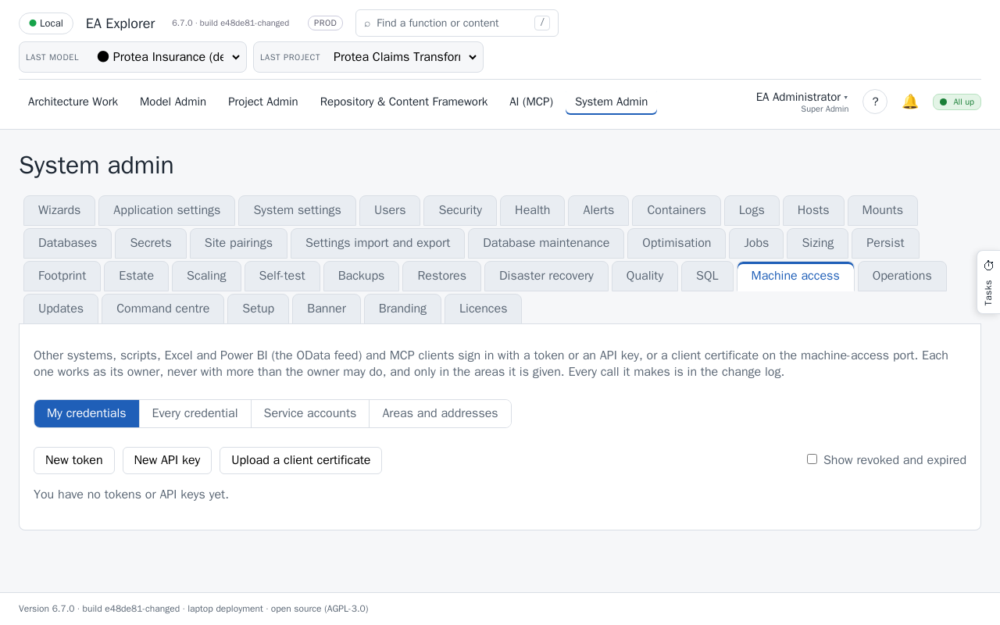

Get a token or an API key
For: Developers, System Admin
A credential for a script or another system, limited to what it needs.

#/admin/machine-accessWhy do this
A token lets a script or system call the API with limited rights: only the areas and models it needs, for a set time. It is safer than sharing a person's password, and can be revoked at once. See Data in and out: integration.
Systems that talk to EA Explorer need identities of their own, limited to what they do, so their access can be watched and stopped without affecting people. This is part of keeping integration safe as well as useful.
In TOGAF terms: Outside the method: this keeps the repository connected to the systems that feed it, so the Architecture Repository stays current. See EA Explorer and the TOGAF Standard.
The goal: A script or system can call EA Explorer safely.
Before you start Your own token: any signed-in person. A service account's API key or a client certificate: an IT Admin or Super Admin.
Steps
- Your own: Me › My tokens and keys. For a system: System Admin › Machine access.
- New token: choose the areas (read or read-write per API area), optionally only some models or projects, and an expiry.
- Copy the secret: it is shown once.
- Send it with every call as
Authorization: Bearer <token>. A client certificate, trusted on the same page, signs in on the machine-access port instead.
Check it worked
Machine access shows when each was last used; every call is in the change log.
If something goes wrong
- Revoke it at once if it leaks; make a new one.